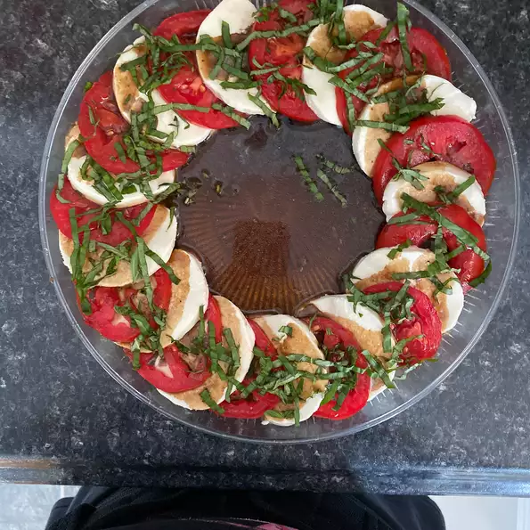

it's a simple Italian salad, made of sliced fresh mozzarella, tomatoes,
and sweet basil, seasoned with salt, and olive oil. It is usually arranged on a
plate in restaurant practice.ide dish), and it may be eaten any time of day.
Ingredient
3 large tomatoes, sliced
8 ounces mozzarella cheese, sliced
¼ cup olive oil
¼ cup balsamic vinegar
¼ teaspoon salt
⅛ teaspoon ground black pepper
¼ cup minced fresh basil
Directions
Steps
Place tomato slices, alternating with mozzarella slices,
on a large serving platter.
Combine oil, balsamic vinegar, salt, and pepper in a jar with a tight-fitting lid;
shake well.
Drizzle over tomatoes and mozzarella; sprinkle with basil.